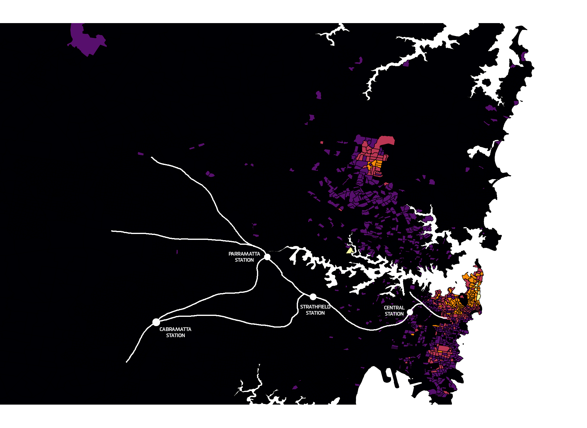
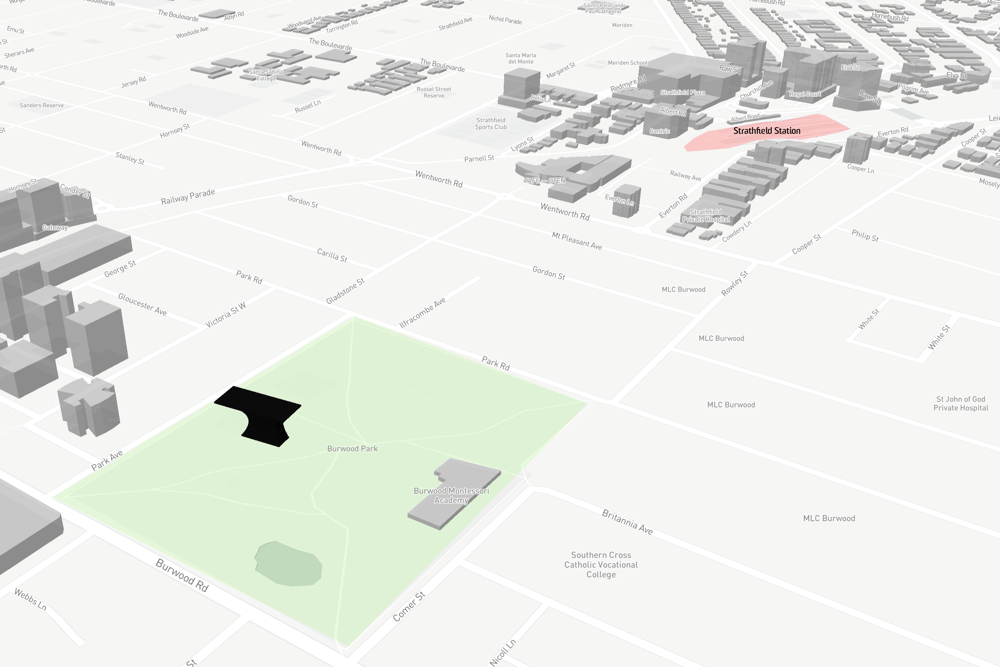

Mesh blocks are analysed among the smallest geographical area for the Australian
Bureau Statistics SA1 census data. The SA1 is a small Australian statistical mainframe
which breaks up the region into smaller data collection in comparison to SA2 – SA3 etc. which holds a higher amount.
After the year 1961 the Australian Census takes place every 5 years. The latest census collected was in 2016
Data journalism reflects upon the numerical data set used for distributing information.
Fields include mathematics, statistics and computer science.
The data which has been analysed through the ABS potrays worshippers in certain suburbs in NSW.
The concentrated areas showcase the amount of certain individuals.
As the areas of the religious communities are spread out shown below in the data,
by achieving a solution is to bring the worshipping communities together.


By showing that the religious groups are far apart from each other the train line is what connects
the worshipping communities together.

The proposed building location for the religious center is located on Burwood Park. It is located here because
the facility close to Strathfield Station.
Strathfield Station is a hotspot for train line express transfers and acts as a center point for all of the religious beliefs shown above.
Also Central, Parramatta and Cabramatta connects with Strathfield Station with the amount of train efficiency on those train lines.

By clicking on the Expanded Map tab it will showcase where the proposed building will be located.